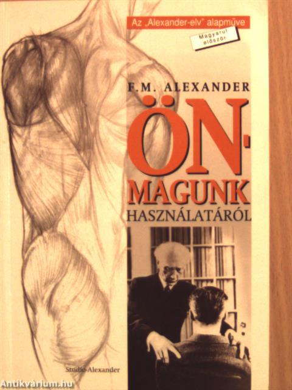
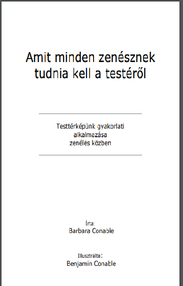
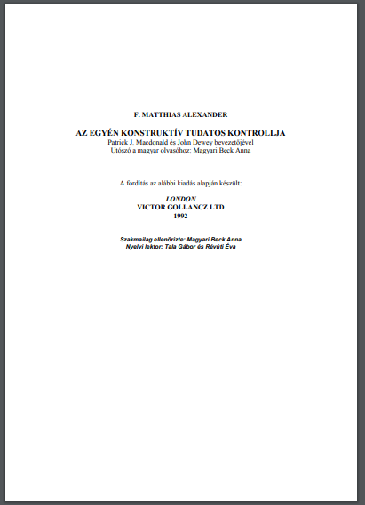

Ajánlott szakirodalom
-
F. M. Alexander: Önmagunk használatáról (Stúdió Alexander Bt., 2000)
 -
Richard Brennan: Az Alexander-technika kézikönyve (Bioenergetic Kiadó, 2018)
-
Barbara Conable: Amit minden zenésznek tudnia kell a testéről (e-könyv, 2011)
 -
F. M. Alexander: Az egyén konstruktív tudatos kontrollja (Stúdió Alexander Bt., e-könyv, 2011)
 -
Richard Brennan: Az Alexander-módszer alapjai (Édesvíz Kiadó, 2001)